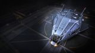

Макс. груз
~26 т
Маленький трюм и слабая защита ставят его в конец торгового рейтинга, зато он почти бесплатен, садится везде и далеко прыгает для своего размера. Первый грузовой корабль почти без риска: купите подешевле, перелетите на другой рынок, продайте подороже и заработайте начальный капитал на Type-6.

Оценка пригодности корабля по шкале 1–100 отражает его возможности с полным набором инженерных улучшений по сравнению со всеми кораблями этой роли. Подробнее: как оцениваются корабли.
Hauler оправдывает своё название: это самый дешёвый специализированный грузовой корабль в игре, крошечный 14-тонный корпус для перевозок почти даром. Трюм скромный — около 26 тонн, зато корабль почти бесплатен, садится на любом аванпосте и благодаря малой массе удивительно далеко прыгает с грузом. Для рейсов между соседними рынками этого достаточно.
Конечно, это корабль только на первое время. Трюм крошечный по сравнению с настоящим грузовиком, защита минимальная, скорость низкая. Но новичку, который учится торговать и не хочет рисковать капиталом, Hauler подойдёт: купили дешевле, прыгнули, продали дороже. Так понемногу наберётся сумма на Type-6, и тогда можно наращивать объёмы. Скромная первая ступень торговой карьеры.
Для самых первых шагов в торговле: первый грузовой корабль без риска для капитала, обучение покупке и продаже с наценкой, короткие рейсы с небольшими партиями и выполнение заданий на доставку почти без затрат.
Четыре особенности Hauler в торговой роли:
Трюм крошечный — лишь малая доля вместимости даже недорогого Type-6. Защита минимальная, скорость низкая. Рейс приносит мало, а против решительного пирата корабль беспомощен. Hauler годится лишь для старта: поторгуете неделю, соберёте первые несколько сотен тысяч кредитов и больше на нём не полетите.
Низкая цена и доступ к малым площадкам делают его хорошим стартовым торговцем. Но трюм примерно на ~26 т и почти нулевая защита оставляют его в конце списка.
Итоговая оценка 42/100 показывает, как корабль отвечает требованиям торговой роли в порядке их важности. У каждого критерия есть вес (доля от 100). Корабль получает часть баллов в зависимости от результатов на фоне остальных. Сумма баллов даёт итоговую оценку.
| Критерий | Баллы | Почему столько |
|---|---|---|
| Максимальный груз | 4/35 | Полностью оснащённый Hauler берёт ~26 т (из шести дополнительных отсеков два класса 3, один класса 2 и три класса 1, часть занята щитом и сканером). Это наименьший груз среди специализированных торговцев. Type-6 перевозит вчетверо больше, а Type-9 берёт ~790 т. Последнее место по самому весомому критерию. |
| Класс площадки и доступ к рынкам | 19/20 | Для малой площадки доступны все аванпосты и планетарные порты; маршруты не ограничены, так что выбор рынков максимален. Ранг и разрешение не нужны. По доступности корабль в лидерах роли, наравне с другими малыми корпусами. |
| Дальность прыжка с грузом | 9/15 | При массе корпуса 14 т (самый лёгкий в игре) Hauler далеко прыгает для своего класса: ~28 св. лет с грузом на модулях класса A, ~36 св. лет с FSD, улучшенным на увеличенную дальность G5. Хороший показатель на тонну массы, хотя абсолютная дальность ниже, чем у крупных специализированных грузовиков. |
| Живучесть | 3/20 | Защита минимальная: символический щит 1A, лёгкая броня и всего 2 внешних крепления при электростанции класса 2. Против решительного пирата корабль беспомощен. Если вас перехватывают, уступите и уходите на форсаже, а не пытайтесь держать удар. |
| Скорость и стоимость | 7/10 | Самый дешёвый специализированный грузовой корабль: корпус за ~30 тыс. кр. и копеечная страховка дают самый безопасный старт в роли. Зато скорость низкая: 204 м/с в обычном полёте, 306 м/с с форсажем. По цене он лидирует, по скорости отстаёт. |
| Взвешенный итог | 42/100 | Совпадает с общей оценкой пригодности этого корабля для роли. |
Веса отражают редакционный порядок важности критериев, а не игровую формулу. Длина полосы показывает, насколько выполнен критерий. Длинные полосы дали больше всего баллов, короткие показывают, где корабль их потерял. Подробнее: как оцениваются корабли.
В каждой таблице корабли оцениваются именно в торговой роли, с разбивкой по размеру посадочной площадки. Столбец Макс. груз показывает максимальный груз при установленном щите. Оценка пригодности дана по той же шкале 1–100, что и на остальных страницах.
| Корабль | Класс | Макс. груз | Плюсы и минусы | Оценка |
|---|---|---|---|---|
| Cobra Mk IV | Малая | ~92 т | Выше оценка; скорость и цена; доступ к рынкамЖивучесть | 52 |
| Cobra Mk V | Малая | ~110 т | Выше оценка; доступ к рынкам; скорость и ценаЖивучесть | 52 |
| Cobra Mk III | Малая | ~64 т | Выше оценка; скорость и цена; доступ к рынкамГруз | 48 |
| Dolphin | Малая | ~88 т | Выше оценка; доступ к рынкам; дальность с грузомЖивучесть | 46 |
| Hauler этот | Малая | ~26 т | — рассматриваемый корабль (точка отсчёта) | 42 |
Оценены 5 торговых кораблей для малой площадки. Лидирует Cobra Mk IV (52). Любой соперник в этом списке может сесть туда же, так что сравнивать при покупке стоит прежде всего с ними.
| Корабль | Класс | Макс. груз | Плюсы и минусы | Оценка |
|---|---|---|---|---|
| Panther Clipper Mk II | Большая | ~662 т | Выше оценка; груз; доступ к рынкамСкорость и цена | 98 |
| Imperial Cutter | Большая | ~794 т | Выше оценка; живучесть; доступ к рынкамСкорость и цена | 95 |
| Type-9 Heavy | Большая | ~790 т | Выше оценка; груз; доступ к рынкамЖивучесть | 94 |
| Type-7 Transporter | Большая | ~310 т | Выше оценка; дальность с грузом; грузЖивучесть | 78 |
| Anaconda | Большая | ~470 т | Выше оценка; дальность с грузом; живучестьСкорость и цена | 76 |
| Imperial Clipper | Большая | ~250 т | Выше оценка; скорость и цена; живучестьГруз | 74 |
| Federal Corvette | Большая | ~618 т | Выше оценка; живучесть; грузСкорость и цена | 70 |
| Type-10 Defender | Большая | ~534 т | Выше оценка; живучесть; доступ к рынкамДальность с грузом | 68 |
| Caspian Explorer | Большая | ~434 т | Выше оценка; доступ к рынкам; живучестьДальность с грузом | 66 |
| Beluga Liner | Большая | ~370 т | Выше оценка; доступ к рынкам; живучестьДальность с грузом | 58 |
Оценены 10 торговых кораблей для большой площадки. Лидирует Panther Clipper Mk II (98). Им нужны площадки побольше и бюджет повыше. По показателям они превосходят Hauler, но относятся к другому классу.
| Корабль | Класс | Макс. груз | Плюсы и минусы | Оценка |
|---|---|---|---|---|
| Type-8 Transporter | Средняя | ~406 т | Выше оценка; доступ к рынкам; скорость и ценаДальность с грузом | 76 |
| Corsair | Средняя | ~318 т | Выше оценка; доступ к рынкам; скорость и ценаДальность с грузом | 74 |
| Python | Средняя | ~294 т | Выше оценка; доступ к рынкам; живучестьСкорость и цена | 72 |
| Type-6 Transporter | Средняя | ~114 т | Выше оценка; доступ к рынкам; скорость и ценаЖивучесть | 65 |
| Krait Mk II | Средняя | ~230 т | Выше оценка; живучесть; доступ к рынкамДальность с грузом | 64 |
| Krait Phantom | Средняя | ~190 т | Выше оценка; дальность с грузом; доступ к рынкамЖивучесть | 62 |
| Type-11 Prospector | Средняя | ~288 т | Выше оценка; доступ к рынкам; живучестьСкорость и цена | 60 |
| Asp Explorer | Средняя | ~130 т | Выше оценка; дальность с грузом; доступ к рынкамЖивучесть | 58 |
| Keelback | Средняя | ~98 т | Выше оценка; живучесть; доступ к рынкамГруз | 52 |
Оценены 9 торговых кораблей для средней площадки. Лидирует Type-8 Transporter (76). У них менее дорогие корпуса и площадки компактнее, чем у больших грузовиков. По цифрам они уступают Hauler и относятся к другому классу.
При цене ~30 тыс. кр. Hauler практически бесплатен. Ранг не нужен, страховка копеечная. Вкладываться в серьёзные инженерные улучшения стартового корабля почти нет смысла: даже с модулями класса A он стоит всего несколько сотен тысяч кредитов.
Это вариант для самых первых шагов: почти без риска освоите торговлю и заработаете начальный капитал. Как только сможете позволить себе Type-6, покупайте — Hauler своё дело сделал.
Специализированный грузовик за ~30 тыс. кр. — вариант с наименьшим риском для обучения торговле. Переходите на Type-6, как только сможете.
Минимальная сборка для первых рейсов. Начальная требует только покупки, класс A даёт основу для торговли. Инженерные улучшения на стартовом корабле редко оправданы, но при желании позволят выжать максимальную дальность.
| Отсек | Начальная · только покупка | Класс A · без улучшений | С инженерными улучшениями | Примечания |
|---|---|---|---|---|
| Внешние крепления | ||||
| Крепление 1 | — | 0A Усилитель щита | G5 Усиленная конструкция + Суперконденсаторы | Усиленная конструкция увеличивает базовую прочность щита. |
| Крепление 2 | — | 0I Теплоотводная катапульта | G1 Боезапас (без экспериментального эффекта) | Необязательный модуль низкого приоритета. Улучшение боезапаса добавляет заряды катапульты. Сбрасывает тепло при скрытном ходе и помогает охладиться между применениями теплоотвода. |
| Основные модули | ||||
| Обшивка | Лёгкий сплав | Лёгкий сплав | Облегчённая G5 (без экспериментального эффекта) | |
| Электростанция | 2E Электростанция | 2A Электростанция | G5 Пониженное тепловыделение + Рассеивание тепла | Поставьте класс A для питания щита и модулей. Пониженное тепловыделение уменьшает нагрев и заметность, чтобы корабль привлекал меньше внимания. |
| Маневровые двигатели | 2E Маневровые двигатели | 2A Маневровые двигатели | G5 Чистая настройка двигателей + Двойное усиление | Поставьте класс A для маневровых двигателей, чтобы уйти на форсаже после перехвата даже с грузом. Чистая настройка двигателей добавляет скорости без лишнего нагрева. |
| Рамочно-сместительный двигатель (FSD) | 2E Рамочно-сместительный двигатель (FSD) | 2A Рамочно-сместительный двигатель (FSD) | G5 Увеличенная дальность + Управление массой | Ставьте класс A в первую очередь: дальность — единственная серьёзная сильная сторона Hauler. Увеличенная дальность вместе с управлением массой удлиняет каждый прыжок между рынками с грузом. |
| Система жизнеобеспечения | 1E Система жизнеобеспечения | 1D Система жизнеобеспечения | G5 Облегчённый (без экспериментального эффекта) | Класс D экономит массу и кредиты; Облегчённый облегчение ещё больше снижает массу. У системы жизнеобеспечения нет экспериментального эффекта. |
| Распределитель питания | 1E Распределитель питания | 1D Распределитель питания | G5 Ускоренная зарядка + Сверхпроводники | Ускоренная зарядка повышает параметры конденсаторов оружия, двигателей и систем. |
| Сенсоры | 1E Сенсоры | 1D Сенсоры | G5 Облегчённый (без экспериментального эффекта) | Поставьте класс D и облегчите модуль. Торговцу большая дальность сенсоров ни к чему: лучше сэкономить массу ради дальности прыжка. |
| Топливный бак | 2C Топливный бак | 2C Топливный бак | (нет чертежа улучшения) | Штатный бак класса 2. Его объём фиксирован, инженерных улучшений нет. |
| Дополнительные отсеки | ||||
| Класс 3 | 3E Грузовой стеллаж | 3E Грузовой стеллаж | (нет чертежа улучшения) | Необязательный модуль. Увеличивает грузовое пространство, пригодится для перевозок. Грузовые стеллажи нельзя улучшать у инженеров. |
| Класс 3 | 3E Грузовой стеллаж | 3E Грузовой стеллаж | (нет чертежа улучшения) | Необязательный модуль. Увеличивает грузовое пространство, пригодится для перевозок. Грузовые стеллажи нельзя улучшать у инженеров. |
| Класс 2 | — | 2E Грузовой стеллаж | (нет чертежа улучшения) | Необязательный модуль. Увеличивает грузовое пространство, пригодится для перевозок. Грузовые стеллажи нельзя улучшать у инженеров. |
| Класс 1 | — | 1A Генератор щита | G5 Усиленный + Повышенная ёмкость | Усиленный щит повышает живучесть. |
| Класс 1 | — | 1E Грузовой стеллаж | (нет чертежа улучшения) | Необязательный модуль. Увеличивает грузовое пространство, пригодится для перевозок. Грузовые стеллажи нельзя улучшать у инженеров. |
| Класс 1 | — | 1I Подробный сканер поверхности (DSS) | G5 Увеличенный радиус сканирования зондов (без экспериментального эффекта) | Необязательный модуль низкого приоритета. Увеличенный радиус расширяет покрытие зондов. Позволяет картографировать планеты и получать исследовательские данные. |
| Планировщики и экспорт | ||||
| Открыть в Coriolis | открыть | открыть | открыть | Открывает сборку на coriolis.io одним нажатием. |
| Открыть в EDSY | открыть | открыть | открыть | Открывает сборку на edsy.org одним нажатием. |
| Скопировать SLEF | Копирует необработанные данные оснащения для этого варианта в формате SLEF. | |||
Займите крошечные дополнительные отсеки грузовыми стеллажами и небольшим щитом. Hauler почти нечем защищаться, поэтому, пока учитесь, торгуйте в безопасных системах. При перехвате щит даст несколько секунд, чтобы уступить и уйти с грузом.
Купите корпус (~30 тыс. кр.) и установите в два больших дополнительных отсека штатные модули 3E: грузовые стеллажи. Основные модули с завода идут класса E.
С завода у корабля штатная легкосплавная обшивка. Ничего докупать не нужно. Торговцу военный композит ни к чему: лёгкая обшивка здесь как раз то, что нужно.
Оба внешних крепления и меньшие дополнительные отсеки пока оставьте пустыми. Щит, дополнительные грузовые стеллажи и сканер появятся при переходе на сборку класса A.
Поставьте класс A для FSD, чтобы далеко прыгать даже с полным трюмом.
Торгуйте в безопасных системах. При перехвате уступайте и уходите на форсаже.
Приоритеты перехода на класс A для начинающего торговца:
Оставьте штатную обшивку из лёгкого сплава — военный композит лишь добавит массы и затрат, а торговцу это ни к чему.
Hauler нужен, чтобы сделать первый шаг. Недорого переведите основные модули на класс A и торгуйте, пока не накопите на Type-6. Серьёзные инженерные улучшения на корпусе за 30 тыс. кр. не окупятся.
Только небольшие инженерные улучшения. Hauler редко стоит большего. Felicity Farseer (при максимальном уровне доступа) предлагает чертёж для FSD. При желании закрепите чертежи для дистанционных улучшений.
| Модуль | Чертёж | Экспериментальный эффект | Инженер |
|---|---|---|---|
| Рамочно-сместительный двигатель (FSD) (2) | Увеличенная дальность (G5) | Управление массой | Felicity Farseer |
| Маневровые двигатели (2) | Чистая настройка двигателей (G5) | Двойное усиление | Professor Palin / Mel Brandon |
| Электростанция (2) | Пониженное тепловыделение (G5) | Рассеивание тепла | Hera Tani |
| Система жизнеобеспечения / Сенсоры (1) | Облегчённый (G5) | — | Etienne Dorn |
| Обшивка | Облегчённый (G5) | — | Selene Jean |
Незначительные: модули маленькие, а стартовый корабль редко стоит улучшений вообще. Не тратьте материалы, которых будет жалко. Лучше перейдите на Type-6. Если всё же решитесь, запросите точное количество материалов по чертежам.
Примерные изменения в трёх вариантах сборки (цифры ориентировочные, не точные значения):
| Показатель | Начальная | Класс A | С инженерными улучшениями |
|---|---|---|---|
| Макс. груз (т) | ~16 | ~24 | ~26 |
| Прыжок с грузом (св. лет) | ~20 | ~28 | ~36 |
| Обшивка | Лёгкий сплав | Лёгкий сплав | Облегчённый G5 |
| Защищённость | минимальная | минимальная | минимальная |
| Скорость с форсажем | 306 м/с | 306 м/с | ~330 м/с |
| Экономичность | начальный уровень | начальный уровень | начальный уровень |
Штатную обшивку из лёгкого сплава улучшает чертёж G5: облегчённая броня. Он снижает массу обшивки на ~40% (сохраняя прыжок с грузом на ~36 св. лет), немного повышает сопротивления и почти не меняет прочность брони. Защита по замыслу остаётся минимальной.
Даже в лучшей сборке Hauler берёт ~26 т — груз стартового корабля. Суть в хорошей для его размера дальности и низкой цене: почти даром научитесь торговле и заработаете первые деньги, прежде чем пересесть на Type-6.
Подойдёт любой короткий безопасный маршрут с высокой наценкой. Летая со своей базы, почти без затрат сделаете первые шаги в торговле.
Hauler — грузовик для старта: самый дешёвый специализированный грузовой корабль в игре, крошечный корпус почти даром, который берёт скромный груз и далеко прыгает для своего размера. Любой серьёзный грузовик больше, но ни один не позволяет начать торговать с меньшим риском. Освойте основы, заработайте первый капитал и пересядьте на следующую ступень. Скромный, но честный выбор.
Данные на странице сверены со следующими источниками.